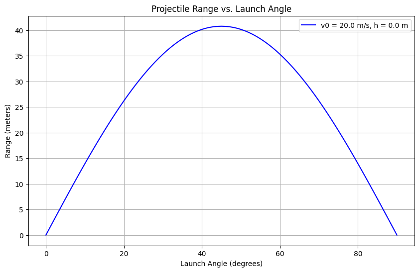

Below are detailed academic notes in Markdown format, tailored to "Investigating the Range as a Function of the Angle of Projection." These notes include a theoretical foundation with derivations, analysis of the range, and a framework for practical applications and implementation. Equations are formatted using single ($) or double ($$) dollar signs for proper LaTeX rendering.
Investigating the Range as a Function of the Angle of Projection
1. Theoretical Foundation
Projectile motion is governed by Newton’s second law in a vacuum with constant gravitational acceleration. We assume no air resistance and a flat surface unless specified otherwise.
Governing Equations
Consider a projectile launched with initial velocity \(v_0\) at an angle \(\theta\) from a height \(h\) (typically \(h = 0\)). The acceleration is purely gravitational in the vertical direction:
- Horizontal: \(a_x = 0\)
- Vertical: \(a_y = -g\)
Using the second law, \(F = ma\), and noting no horizontal forces, we write the differential equations:
Initial Conditions
- At \(t = 0\):
- \(x(0) = 0\), \(v_x(0) = v_0 \cos\theta\)
- \(y(0) = h\), \(v_y(0) = v_0 \sin\theta\)
Solving the Equations
Integrate the horizontal equation: $$ \frac{dx}{dt} = v_0 \cos\theta $$ $$ x(t) = (v_0 \cos\theta) t $$
Integrate the vertical equation: $$ \frac{dy}{dt} = v_0 \sin\theta - g t $$ $$ y(t) = h + (v_0 \sin\theta) t - \frac{1}{2} g t^2 $$
Time of Flight
The projectile lands when \(y(t) = 0\). Solve: $$ 0 = h + (v_0 \sin\theta) t - \frac{1}{2} g t^2 $$ Rearrange into a quadratic equation in \(t\): $$ \frac{1}{2} g t^2 - (v_0 \sin\theta) t - h = 0 $$ Using the quadratic formula \(t = \frac{-b \pm \sqrt{b^2 - 4ac}}{2a}\) where \(a = \frac{1}{2} g\), \(b = -v_0 \sin\theta\), \(c = -h\): $$ t = \frac{v_0 \sin\theta \pm \sqrt{(v_0 \sin\theta)^2 + 2gh}}{g} $$ For \(h = 0\), this simplifies to: $$ t = \frac{2 v_0 \sin\theta}{g} $$
Range Equation
The horizontal range \(R\) is the distance traveled when \(y = 0\): $$ R = x(t) = (v_0 \cos\theta) \cdot \frac{2 v_0 \sin\theta}{g} $$ Using the identity \(\sin(2\theta) = 2 \sin\theta \cos\theta\): $$ R = \frac{v_0^2 \sin(2\theta)}{g} $$ This is the range for a projectile launched and landing at the same height (\(h = 0\)).
Family of Solutions
The range depends on free parameters: - \(v_0\): Initial velocity (affects \(R\) quadratically). - \(\theta\): Angle of projection (via \(\sin(2\theta)\)). - \(g\): Gravitational acceleration (inversely proportional). - \(h\): Initial height (complicates \(t\) and thus \(R\)).
For \(h \neq 0\), the range becomes: $$ R = (v_0 \cos\theta) \cdot \frac{v_0 \sin\theta + \sqrt{(v_0 \sin\theta)^2 + 2gh}}{g} $$
2. Analysis of the Range
Dependence on Angle \(\theta\)
The term \(\sin(2\theta)\) governs the angular dependence: - At \(\theta = 0^\circ\) or \(90^\circ\), \(\sin(2\theta) = 0\), so \(R = 0\). - Maximum occurs when \(\sin(2\theta) = 1\), i.e., \(2\theta = 90^\circ\), \(\theta = 45^\circ\): $$ R_{\text{max}} = \frac{v_0^2}{g} $$ - Symmetry: \(R(\theta) = R(90^\circ - \theta)\), e.g., \(R(30^\circ) = R(60^\circ)\).
Influence of Parameters
- Initial Velocity (\(v_0\)): $$ R \propto v_0^2 $$ Doubling \(v_0\) quadruples \(R\).
- Gravitational Acceleration (\(g\)): $$ R \propto \frac{1}{g} $$ Lower \(g\) (e.g., on the Moon, \(g = 1.62 \, \text{m/s}^2\)) increases \(R\).
- Initial Height (\(h\)): Non-zero \(h\) increases time of flight, thus extending \(R\). See the modified equation above.
Example Calculation
For \(v_0 = 20 \, \text{m/s}\), \(g = 9.81 \, \text{m/s}^2\), \(h = 0\): - \(\theta = 30^\circ\): \(R = \frac{20^2 \sin(60^\circ)}{9.81} = \frac{400 \cdot 0.866}{9.81} \approx 35.3 \, \text{m}\) - \(\theta = 45^\circ\): \(R = \frac{400 \cdot 1}{9.81} \approx 40.8 \, \text{m}\)
3. Practical Applications
Real-World Scenarios
- Sports: A soccer ball kicked at \(v_0 = 15 \, \text{m/s}\), \(\theta = 30^\circ\) follows the same equations.
- Engineering: Artillery range depends on \(\theta\) and \(v_0\), adjusted for terrain (\(h \neq 0\)).
Model Extensions
- Uneven Terrain: If landing height \(h_f < h\), adjust the time of flight equation: $$ y(t) = h + v_0 \sin\theta t - \frac{1}{2} g t^2 = h_f $$
- Air Resistance: Add a drag force \(F_d = -k v\), requiring numerical solutions (e.g., Euler method): $$ a_x = -k v_x, \quad a_y = -g - k v_y $$
4. Implementation Framework
Simulation Equations
- Range: \(R = \frac{v_0^2 \sin(2\theta)}{g}\) (for \(h = 0\)).
- Trajectory: Parametric equations \(x(t)\), \(y(t)\) for visualization.
Python Pseudocode
import numpy as np
import matplotlib.pyplot as plt
v0 = 20 # m/s
g = 9.81 # m/s^2
theta = np.linspace(0, 90, 91) # degrees
R = (v0**2 * np.sin(2 * np.radians(theta))) / g
plt.plot(theta, R)
plt.xlabel("Angle (degrees)")
plt.ylabel("Range (m)")
plt.title("Range vs. Angle of Projection")
plt.show()
Visualization
- Plot \(R\) vs. \(\theta\) for \(v_0 = [10, 20, 30] \, \text{m/s}\).
- Compare \(g = 9.81 \, \text{m/s}^2\) vs. \(g = 1.62 \, \text{m/s}^2\).
5. Limitations and Extensions
- Limitations: Ignores air resistance, assumes constant \(g\), and flat terrain.
- Improvements:
- Drag: \(F_d = -b v^2\) (quadratic drag).
- Wind: Add horizontal acceleration term.
These notes provide a rigorous foundation with equations ready for simulation or further analysis. Let me know if you'd like a full Python script or deeper exploration of any section!
Python Implementation

import numpy as np
import matplotlib.pyplot as plt
def calculate_trajectory(v0, theta, g=9.81, h=0):
"""
Calculate projectile trajectory.
Args:
v0: initial velocity (m/s)
theta: launch angle in degrees
g: gravitational acceleration (m/s²)
h: initial height (m)
Returns:
x: horizontal distances
y: vertical distances
"""
theta_rad = np.radians(theta)
# Time of flight
t_end = (v0 * np.sin(theta_rad) + np.sqrt((v0 * np.sin(theta_rad))**2 + 2 * g * h)) / g
t = np.linspace(0, t_end, num=100)
# Horizontal and vertical distances
x = v0 * np.cos(theta_rad) * t
y = h + v0 * np.sin(theta_rad) * t - (g/2) * t**2
return x, y
# Parameters
v0 = 20.0 # initial velocity: 20 m/s
g = 9.81 # gravitational acceleration: 9.81 m/s²
h = 0.0 # initial height: 0 m
# Calculate trajectory for angles 0° to 90°
angles = np.linspace(0, 90, 91)
ranges = []
max_heights = []
for angle in angles:
x, y = calculate_trajectory(v0, angle, g, h)
ranges.append(x[-1]) # Range is the last x-value
max_heights.append(np.max(y)) # Maximum height
# Plotting
plt.figure(figsize=(10, 6))
plt.plot(angles, ranges, 'b-', label=f'v0 = {v0} m/s, h = {h} m')
plt.grid(True)
plt.xlabel('Launch Angle (degrees)')
plt.ylabel('Range (meters)')
plt.title('Projectile Range vs. Launch Angle')
plt.legend()
plt.show()
# Find maximum range and optimal angle
max_range = max(ranges)
optimal_angle = angles[ranges.index(max_range)]
print(f"Maximum range: {max_range:.2f} m at angle: {optimal_angle:.1f}°")